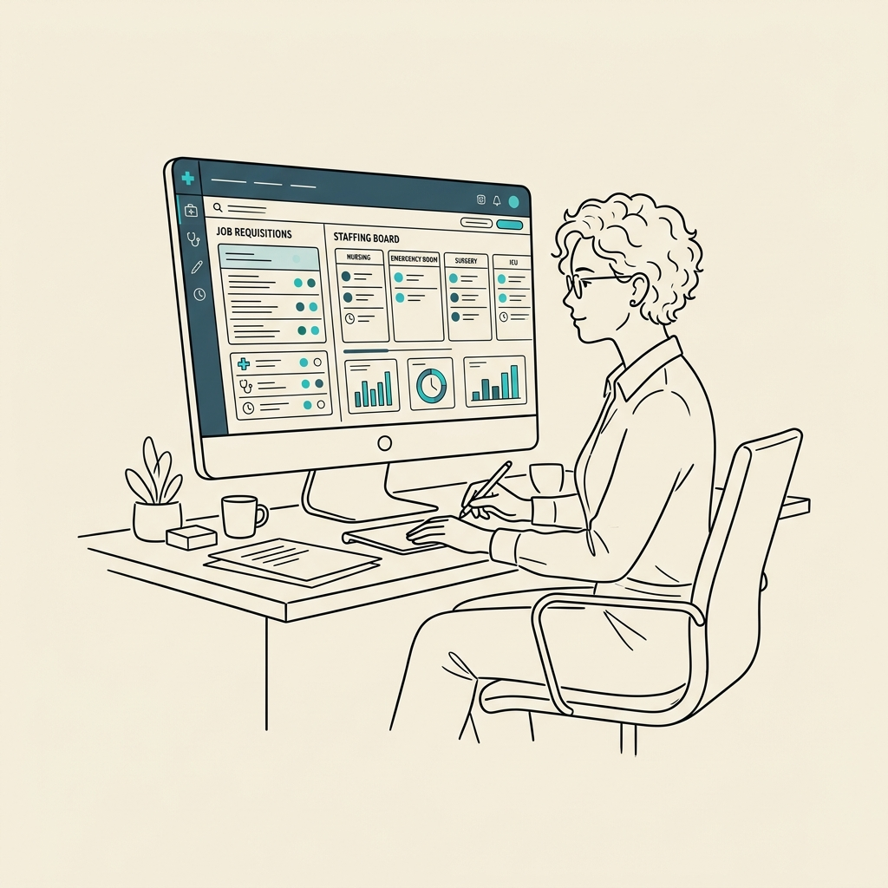
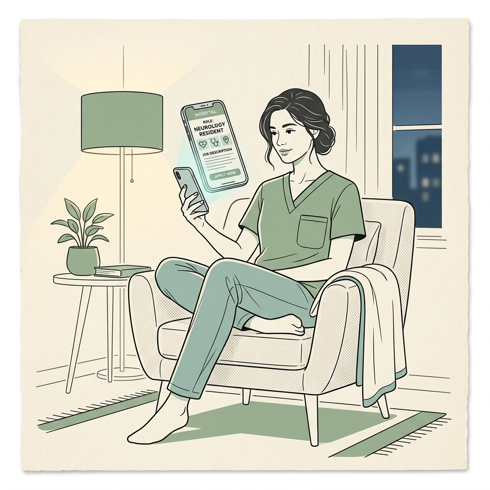

Agency recruiter
“Who needs moving today?”
Returns to followed records, active pipelines and the conversations already in motion.
All day · staffing viewOne recruiting platform that had to be two products — depending on who signs in.
An internal hiring system for hospitals, and a staffing desk for the agencies that supply them. Same object model. Same codebase. Two front doors — and a white-label skin so the hospital never sees ours.

01 / The Fork
Penknife looks like one recruiting platform. It is sold as two.
The first buyer is a hospital's own talent team — hiring nurses, technologists and clinical staff onto its own payroll. The second is a staffing agency — 314e's own recruitment desk first, then the agencies it sells to — placing contract clinicians into hospital networks nobody in the room owns.
Those two businesses share almost everything you can point at. A person. A role. An application. An interview slot. A start date. What they don't share is what any of it means. For a hospital, a filled requisition ends the story. For an agency, a placement is where the story starts earning — it hangs off a deal with a bill rate and a client who is watching the clock.
The obvious answer was two products. We had one team, one codebase, and hospital clients who wanted both.
Three real accounts, three navigations. Nobody configured these by hand — the nav is assembled from what the signed-in user is entitled to. Give someone both entitlements and the Dashboard item grows a level rather than the app growing a mode switch.


Three accounts, one build — sidebar detail, cropped from full-screen captures
The navigation isn't a menu we wrote. It's what your permissions add up to.
02 / Context
314e Corporation is a US healthcare IT company in the SF Bay Area. Part of their business is running large staffing operations for hospital systems — hundreds of open clinical positions at once. When we joined the project they were doing it with fragments: a generic ATS, a disconnected CRM, email threads, and spreadsheet pipelines held together by people remembering things.
Penknife was 314e's answer — their own platform. Its commercial model was white-labelling: the hospital gets a fully branded recruitment system (their logo, their domain, their colours) while 314e operates it behind the scenes. UCLA Health is one confirmed deployment.
That model had a direct design consequence. We couldn't lean on product identity as a quality signal. Nobody would ever see a Penknife logo and infer competence — every screen would be wearing someone else's brand. The experience had to carry it alone. The tool had to be recognisably good, not recognisably Penknife.
It also meant the platform had to sell twice: to hospitals who wanted to run their own hiring, and to agencies who wanted to run staffing desks. Same software, two contracts, two vocabularies.
Where the candidate's pipeline stage lived.
What the hospital client believed was happening.
What was actually said — trapped in personal inboxes.
The weekly report, already stale when it was read.
03 / The Problem
The complexity is higher on every axis. Candidates carry multi-layered credential requirements — licence types, specialties, compliance documentation. Positions are often urgent; a clinical coverage gap affects patient care directly. And the regulatory environment adds verification layers that generic platforms were never built to hold.
A coverage gap has a patient-care consequence. The clock is already running.
Not merely qualified on paper — placeable in this hospital, now.
Four disconnected tools
ATS for tracking. A separate CRM for client relationships. Email for communication. Spreadsheets for reporting. No single source of truth, and no agreement on which one was authoritative.
No unified candidate view
Recruiter context was scattered across systems. Every handoff meant re-explaining a candidate's history from scratch, usually over Slack, usually from memory.
Healthcare complexity unaddressed
Generic platforms had no concept of licence types, specialty matching, shift patterns, or compliance documentation workflows. Everything real lived in a free-text note.
Hospital clients had no visibility
Hiring managers had no real-time view of their open positions. Status was compiled by hand each week and was stale by the time it was read.
Two audiences, one backlog
Agency staffing and hospital internal hiring wanted different things from the same screens. Every feature request arrived pre-loaded with a fight about whose workflow won.
Email lived outside the record
The most important artefacts in recruiting — what was actually said to a candidate and a client — sat in personal inboxes, invisible to everyone else on the account.
"How do you design a single platform that makes a recruiter's full day — sourcing to placement — faster, less error-prone, and contextually aware of healthcare's demands — without forking into two products the day a hospital asks for one?"
04 / Who Logs In
The shared record was an architecture decision. The experience still had to begin with a person in a moment: a recruiter starting a shift, a manager between rounds, or a candidate applying after work. Mapping those moments made the permission model much easier to reason about than a conventional persona grid.
Agency recruiter
Returns to followed records, active pipelines and the conversations already in motion.
All day · staffing view
Hospital talent partner
Starts with assigned jobs, stage counts, interviews and the department waiting on the hire.
Daily · internal-hiring viewHiring manager
Visits briefly between clinical work to review evidence, comment and make one decision.
Occasional · reduced viewAccount manager
Reads delivery state, SLA and client risk without needing to operate the recruiting pipeline.
Weekly · relationship view
Candidate
Sees the hospital's careers site, never Penknife, while the same application record forms underneath.
After hours · branded portal05 / Research → The Insight
We started with direct access to 314e's own recruitment team — an advantage, because we had real users from day one, and a constraint, because internal projects carry political weight. Not every pain point gets said out loud in a group with your manager in it. So we sat with recruiters during their actual workday rather than interviewing them about it.
“Where is this candidate?” was immediately followed by “What does the client know?” The workflow crossed the ATS/CRM boundary even when the tools did not.
A candidate was both pipeline state and relationship history. A job was both a requisition and a client promise.
One object model and activity history underneath; permission-shaped navigation for staffing and internal hiring above it.
The finding that mattered: ATS and CRM functions are not separable in a recruiter's head. A candidate is also a relationship. A job opening is also a client deliverable. Every recruiter described toggling constantly between tracking where a candidate sat in the process and managing what the client believed was happening. Generic platforms enforce that split at the tool boundary. Penknife's premise was to collapse it.
06 / The Object Model
Given the volume Penknife handles — candidates, jobs, clients, interviews, tasks, communications, compliance documents — IA was the phase that decided whether the rest would work. We ran card-sorting and tree-testing with recruiters to learn how they grouped things, rather than assuming.
What came back was an object model, not a feature list. Recruiters navigate by what they are looking for, not by which step of a process they're on. So the sidebar became a list of nouns, and every screen in the product became a filtered view of one of them.
The global search returns Jobs (67), Applications (79), Candidates (99), Company (99), Placement (99) and Opportunity (99) as separate, countable buckets — plus a Recent list. If the object model were wrong, this dropdown would be the first place it showed.
Job rows carry status, department, employment type and location chips with a “+5 More” overflow. People rows carry email and phone as tappable links. Same list, different row grammar — so you can tell what you've found before you read it.

Global search — results grouped by object, capped at the top 100
07 / Key Surfaces
What follows is the product as it actually stands, in the order a recruiter meets it. Where a surface belongs to only one side of the business, it's flagged.
The jobs list is the first place the two businesses have to coexist. An agency's staffing jobs and a hospital's own requisitions sit in the same table, under the same columns, in the same pagination — because a recruiter with both permissions genuinely works across both in one afternoon.
We resisted a segmented control at the top. Splitting the list would have made the common case (find the job I'm thinking of) worse in order to make a rare case (audit only staffing jobs) marginally better. Instead the distinction became a single marker on the row, with the label on hover.

Jobs — staffing and internal requisitions in one table
Staffing jobs carry a small amber dot beside the title; hovering names it “Staffing Job”. Internal requisitions carry nothing. The default state stays quiet — you only pay attention to the distinction at the moment you need it.
More jobs sat in draft than live. Half-written requisitions are a real state in healthcare hiring — approvals stall, headcount moves — so drafts got their own counted tab rather than being buried behind a status filter.
Job title, recruiter, openings, status, department, location, created date and job ID — the columns a recruiter uses to answer “is this mine, and is it still live?” without a single click.
The very first control on a new job is who may see it. Confidential requisitions are real in hospital hiring — replacing a department head who hasn't resigned yet. Getting this wrong is unrecoverable, so it sits above the title field, not in an advanced section.
A Pediatric hiring pipeline is not a Physio Intern pipeline. Stages are built inline — Applied, custom stages, then the fixed terminals Hired / Rejected / Withdrawn — and saved as reusable templates with a last-modified date. Recruiters clone far more than they author.
Multiple-choice screening questions, reorderable, importable from templates, each individually required or not. Asking the licence question at application time is what makes the AI score downstream worth anything.
Publish means the job goes live on the hospital's white-labelled careers site. Preview shows exactly that page before it's real. Given the audience, we never let “save” and “publish” share a button.

New Job — one page, three sections, jump-nav on the left (the frame auto-tours the full form)
Every recruiter we shadowed searched in one of three registers, and they were not interchangeable. Sometimes you know the name. Sometimes you know the shape of the person but not the name. Sometimes you have 220 applicants and one afternoon. We built a different instrument for each rather than one search box pretending to cover all three.

Advanced filter — nested rules, groups and subrules over structured fields and resume text
Recruiters were already writing boolean strings into other tools and getting them subtly wrong. Making the operator a visible, per-group control — with the group's scope drawn as a bracket down the left — turned a syntax problem into a structure problem.
A rule can target Resume and full-text search it, then carry subrules underneath — Skills, and further fields — so “has this in the resume, and specifically these skills” becomes one expression instead of two searches and a manual intersection.
A good ICU query takes real effort to compose and gets rerun weekly. Saved sits beside Search at the top of the modal, and Save Search sits beside Apply Filter at the bottom — so the effort is banked at the moment it's spent.


Penknife scores candidates against a job's requirements. For clinical roles that means licence type, specialty match, years in specific care settings, and location or availability constraints — which is exactly why it can be useful, and exactly why recruiters were suspicious of it.
The design problem was never accuracy. It was standing: what authority does this number have in the room, and what happens when a recruiter disagrees with it? Three decisions came out of that.

Job record → Applications — fit score as a column, stage as the navigation
Each row shows Relevant or Irrelevant next to a numeric score. The chip is what you scan; the number is what you interrogate. In testing, recruiters trusted a number more when it was accompanied by the model's own plain-language read of it.
Scores arrive asynchronously, so a row can sit in Calculating with a spinner. We refused to render a placeholder zero or an empty cell — both read as “this candidate scored badly”, which is a lie the recruiter acts on.
The primary navigation of the applicant list is still process state, not score. The AI sits inside the recruiter's existing structure rather than replacing it — you never have to adopt the model's worldview to use the table.
“Filter by AI Scoring” sets a floor — shown here at 65 — with the track labelled Irrelevant → Relevant and thumbs-down / thumbs-up anchoring each end. The model narrows the pool. The recruiter defines what “narrow” means, and can change their mind in one drag.
It's one of five tabs on the job record — Applications, Details, Activities, Draft Applications, AI Recommendations — and the record opens on unfiltered Applications. Reaching for the AI lens is an action you take, not a filter applied to you on entry.
Sat in the toolbar beside the search field. Scores drift as jobs are edited and resumes are updated. A stale score presented as current is the fastest way to lose a recruiter's trust permanently, so the age of the answer is always on screen.

AI Recommendations — the recruiter sets the cut-off
We designed the interface around the score, not the model. How it was trained and weighted was engineering's; what a recruiter was allowed to conclude from it was ours. Keeping that line visible is the reason this feature became something account managers led with in pitches instead of something recruiters quietly switched off.
The internal-hiring dashboard was not designed as a report. It was designed to help a recruiter resume a working day: which requisitions are active, where applicants are accumulating, and which interviews need an assessment next.
The same screen used on the cover makes that hierarchy visible without invented call-outs or a separate marketing mock-up.
A useful dashboard answers:
“Where do I restart?”
This is the least visible decision in the product and the one we'd defend hardest. A task, a job, a contact and an opportunity are wildly different things — but in Penknife they are all built from the same four parts, in the same order, with object-specific tabs added on the end rather than mixed in.
The payoff is compounding. A recruiter who has opened one record knows where the audit trail lives in every other record, forever. It also meant the drawer, the full page and the slide-over could share one implementation, which is how a small team shipped this many object types.


Task drawer — the same two-tab shell used for creating and editing
The opportunity record uses a left jump-nav instead of tabs because the content is long — but the sections are the same spine in the same order. The pattern scales from a 500px drawer to a full page without a recruiter having to relearn anything.
Opportunity ID, name, deal value ($340k), status and contact sit in Primary. Expected bill rate, added-by and closed reason sit in Secondary. The split came from watching who reads which — account managers scan the top, finance reads the bottom.
Stage changes and outbound emails land in the same chronological feed, each with the related job linked inline. Starring is how an account manager marks the two entries that matter before a client call.
Paginated and sortable, at the bottom of every record. This is what compliance asked for and what settles arguments — including the ownership change visible here, from Steve Rogers to Aayush.

Opportunity record — full page, same spine (the frame auto-tours every section)
This is the half of the product a hospital's internal team never really uses, and the half an agency lives or dies by. It's also where the ATS/CRM collapse pays off most visibly: the same board grammar, the same slide-over, the same activity feed — pointed at deals instead of people.

Opportunities — pipeline board with per-stage value
Identical board mechanics to the candidate pipeline — because an account manager and a recruiter are frequently the same person on a small desk, and asking them to hold two interaction models for the same gesture was never going to survive contact.
Each column shows both how many deals sit there and what they're worth. Pipeline health is two numbers per column, readable without opening anything — which is the whole reason an account manager opens this screen.
Hospital client name, deal value, and edit / task / refresh shortcuts sit on the card itself, with the open/closed state as an inline dropdown. The most common actions never require a click-through.


Recruiting is mostly email. That sounds trivial until you're sending on behalf of a hospital, from a domain you don't own, to clinicians who are legally entitled to opt out — at which point the send button is the most dangerous control in the product.
So the email layer isn't a feature; it's a chain of checkpoints, and we designed the chain before we designed any of the screens. Each link is a place a bad send can still be stopped.

Broadcasts — bulk send, staged as four verifiable decisions
Four stacked sections, each carrying a green tick once it's valid. Sending to 100 people is a different psychological act from sending to one — so the composer makes you see all four decisions in one glance before Send is credible.
The two audiences have different merge fields and different legal footing. Making that the first control — above From — means the personalisation tokens offered downstream are always the right set.
Scheduling sits inside the primary action rather than beside it, and Preview & Test sits immediately to its left. The riskiest control on the page is flanked by the two things that make it safe.
“Don't want to receive emails? Click here” and the physical address are already in the body, with Opt-out as an insertable block alongside Templates, Personalization and Signature. It takes deliberate effort to send a non-compliant broadcast.


Automation in a recruiting tool is where trust goes to die. Something fires at 3am, touches 53 candidate records, and nobody can reconstruct why. The design brief we set was narrow: a workflow must be legible in one sentence, and its failure must be as visible as its success.


The stepper across the top is for building; the canvas below is for reading. Newer users follow the three steps in order. Experienced admins arriving at someone else's workflow ignore the stepper entirely and read the node graph. Rather than pick one metaphor, we let the same screen answer both questions.
The most technically complex thing we built, and the one with the highest measured return. When a recruiter publishes a job in Penknife, it goes live on that hospital's white-labelled careers site. Applications route straight back into the ATS, tagged to the right job and the right client. No CSV, no re-entry, no external job-board account.
It required defining a multi-tenant publishing model with engineering before a single screen was drawn — which is also why the token system existed in the first place.

Fairview Hospital — white-label careers portal (the frame auto-tours the full page)
Candidates see Fairview Hospital throughout — careers page, listings, application forms. “Powered by Penknife” appears once, in the footer. Everything above it is a token swap, which is why a new client deployment took under two days rather than a redesign.
The left rail filters are driven by the structured fields set on the New Job form — not free text. Specialty and deployment-type filtering works on the public site only because somebody was forced to pick from a dropdown on the inside.
Apply Now pinned in a sticky right card with publish date, employment type, department, work type and hiring type beneath it. Similar Jobs at the bottom extends the session — a candidate who isn't right for this role is often right for the next one.
Applying here creates the record in the ATS, tagged to the correct job and hospital client, screening answers attached, scoring queued. This eliminated the single largest source of manual data entry we measured across the whole platform.

White-label job detail — candidate-facing
Reporting shipped thin. At launch the dashboard gave aggregate counts — open jobs, applications per requisition, scheduled interviews — and clients wanted diagnostics: time-to-fill against a benchmark, where the funnel leaks, whether we're meeting the review SLA we contractually promised. That gap became the loudest post-launch request on the project, and we iterated it under pressure.
The screen below is where Insights landed. We're showing it because it's the honest end state, not because it was the launch design — it wasn't, and section 10 says so plainly.

Insights — pipeline velocity, conversion and client SLA adherence
Time to fill shows −3.2d vs target with a 21.6-day network benchmark underneath. Submission-to-offer shows 3.8:1 against a 5.2:1 industry standard. A metric without a reference point is a number an account manager can't defend in a room, so none ship alone.
Sourced 1,248 → Screened 38.9% → Clinical review 44.0% → Hospital interview 40.2% → Offer 37.2% → Placed 87.5%. Reading the percentages rather than the bars tells you the bottleneck is hospital-side interview scheduling — which is exactly the argument an account manager needs to make.
Each hospital account shows active requisitions, average review time and SLA adherence, with the panel explicitly tagged Client-Facing. Designing a surface you know will be screen-shared into a client meeting changes what you're willing to round.
The per-requisition table ends in a Primary Bottleneck column written as a sentence, not a code. It's the one column nobody has to be trained to read, and it's the one that turns a report into a decision.
08 / Mobile
Penknife is a desktop tool. Recruiters work at desks, across wide screens, in long sessions, holding a lot of rows in view at once. Mobile was never going to be the primary experience, and we made that call early rather than discovering it at the end.
What we designed instead was a constrained surface for the people who genuinely need to act away from a desk — hospital hiring managers and account managers. View submitted candidates, leave feedback, approve or reject. Nothing else. The mobile experience is less capable by design, and that was the right call.
of observed sessions belonged on a wide, information-dense desktop.
Average session · 40+ minutes
Mobile · approval surface
Scope stops here by design
Research-backed scope
A responsive reflow of a data-dense recruiter workspace would have produced a worse desktop experience and still a mediocre mobile one. We chose to do one of them exceptionally well and said so out loud, with the analytics on the table.
Hiring manager use case
Not a compressed recruiter UI — a purpose-built surface for the away-from-desk approval scenario. Every request to add “just one more thing” to it got measured against those three tasks, and most didn't survive.
09 / Decisions & Trade-offs
The useful part of a trade-off is not the polished rationale. It is the line we drew, what we knowingly gave up, and whether that cost still looks acceptable after launch.
Cost accepted: more entitlement edge cases.
Cost accepted: slower first deployment.
Cost accepted: no full recruiter workflow on a phone.
Cost accepted: one extra action before seeing recommendations.
Debt taken: the client-facing view has a structural ceiling.
Blind spot: approval flows carried more inference than evidence.
A decision without its cost is just a slogan.
10 / What We'd Do Differently
This is a live product we're genuinely proud of. It also has real seams. These are the ones we'd change.
Where the seams appeared
Discovery ran long and loose. We front-loaded research into an unstructured phase with no sprint cadence and no time-boxed synthesis. Good insight, poor momentum, and all the compression landed at the back end where it damaged the reporting work. We'd run discovery in short, tight cycles now, even at the cost of depth.
We designed the hiring-manager experience from inference. The client-facing portal and approval flows were built largely from secondary interviews and account-manager accounts. We should have escalated the access problem as a project risk in week two instead of designing around it and hoping.
We found the two-sided structure late. The staffing / internal-hiring split emerged from build conversations rather than from research, which meant retrofitting the dashboards and the permission model after the IA was settled. It worked — but it was luck that the object model turned out to be shared. Had it not been, we'd have shipped a fork.
Reporting was under-resourced relative to its strategic weight. It was the module clients asked about first and the one we designed last. Insights is good now; it got there through post-launch iteration under pressure, not through design investment during the build. That's the single biggest planning mistake on the project.
The parent-profile decision was the wrong call. Folding client context into the candidate view framework was pragmatic and shipped on time, but the integrated approach has a ceiling — there's a quality of client-facing experience it structurally cannot reach. Given the same constraints we'd fight harder to carve out the backend work.
11 / Outcomes
Penknife is live, but the commercial metrics belong to 314e and most are not public. So this is an evidence page rather than a victory lap: direct facts, observed signals, and the claims we are deliberately not making.
The product launched in 2021 and continues to serve US healthcare recruiting workflows.
Confidence · confirmedStaffing agencies and hospital talent teams run from the same object model and design system.
Confidence · visible in shipped permissionsThe semantic token system turned a new white-label client into configuration rather than a fresh front-end project.
Confidence · delivery recordAccount managers began leading demos with recruiter-set thresholds and visible score freshness.
Confidence · team observation, not analyticsEvidence first. Adjectives later.